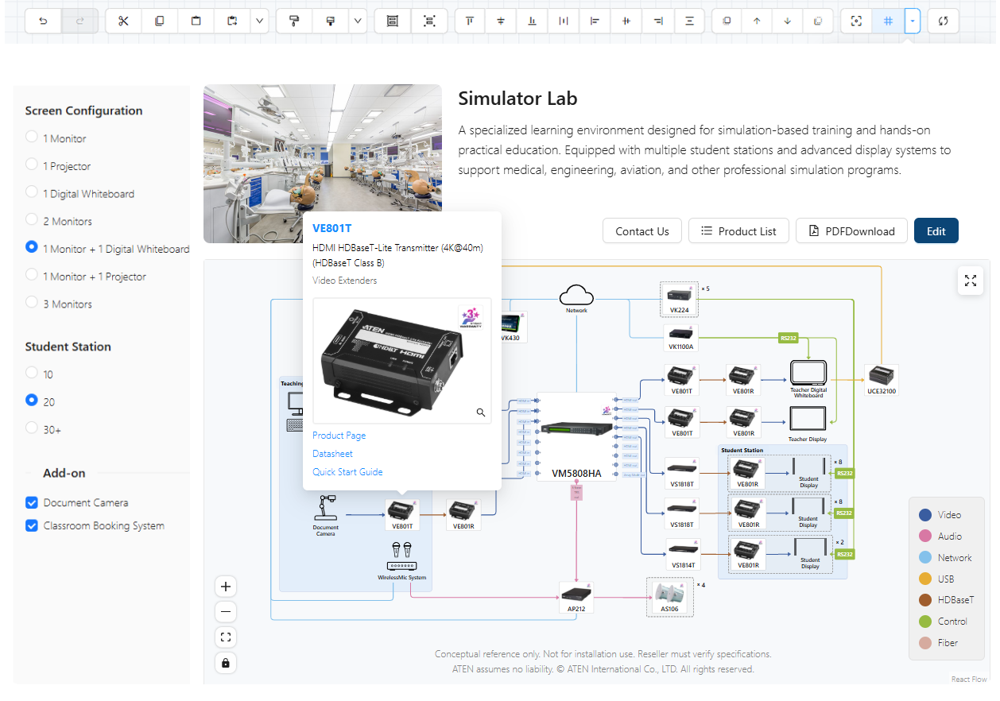
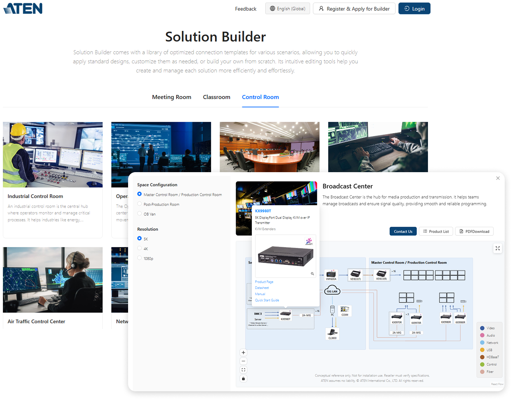
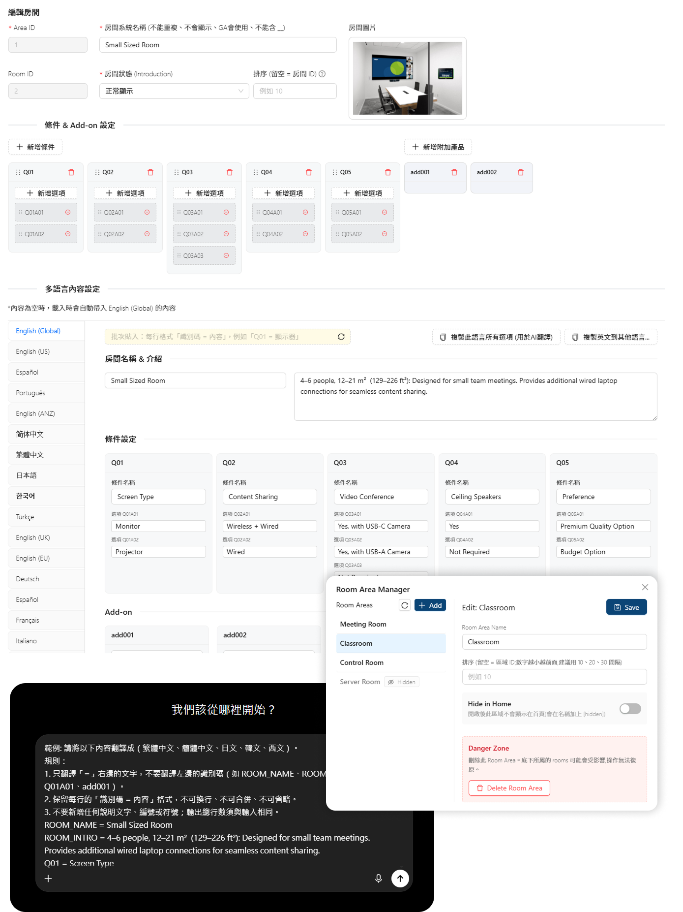
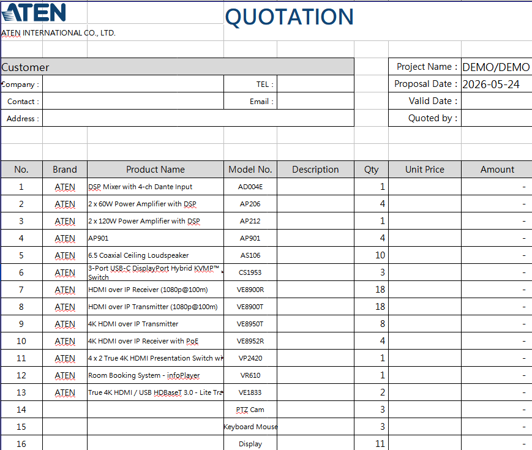
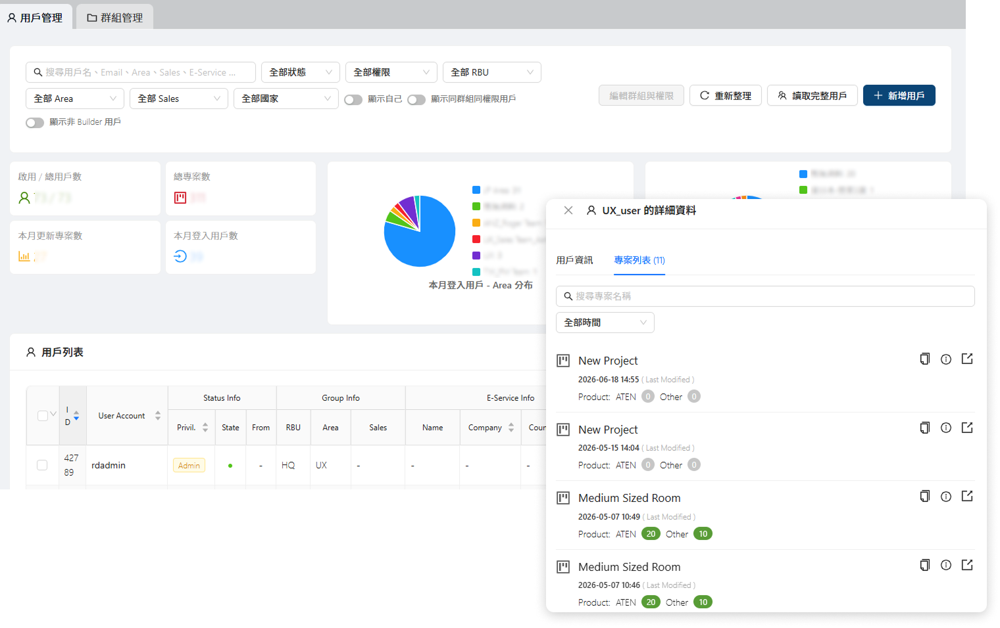
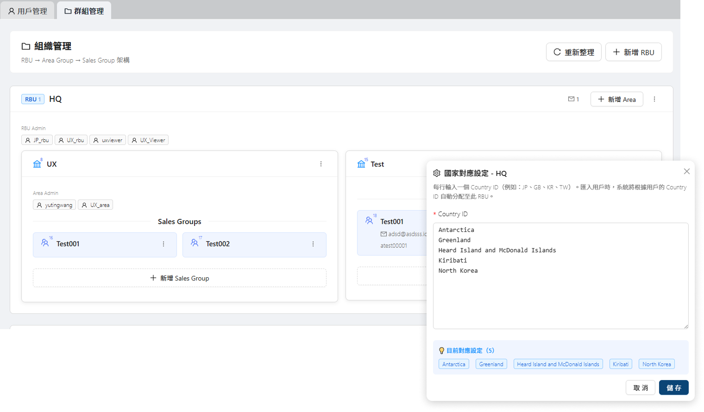

ATEN Solution Builder
2025 - 2026
讓系統整合商（SI）快速完成案場系統架構：
從套用模板，到一鍵輸出 Excel 設備清單、報價單與視覺化系統連線圖
Solution Builder 是一個 B2B 視覺化系統架構設計工具：SI 可以使用豐富的案場系統架構模板，並可以深入編輯在畫布上拖放設備、建立連線，系統即時驗證訊號相容性、計算物料清單（BOM）， 最後一鍵輸出可直接交付客戶的文件。
它同時是公司從「產品銷售」走向「解決方案銷售」轉型策略的落地載體，提供總部PM、業務與子公司完整的後台管理，
包括:解決方案管理、產品管理、顧客管理。
我的角色
規格定義、UX/UI 設計、前端開發 (React) 與數據分析架構。與後端工程和使用者體驗研究員一同協作完成此專案。
專案屬性
B2B SaaS · 視覺化編輯器 · 企業數位轉型
- 專案主體 Solution Builder 本篇 B2B 視覺化提案工具，本系列的產品本體；另外兩個專案都為了支撐它而生。
- 對外入口 解決方案顧問 AI Agent 從 Builder 衍生的對話式 AI——既是服務內的產品顧問，也是把使用者從官網導入這套服務的入口。
- 對內地基 用 LLM 結構化產品資料 支撐前兩者的資料地基；一套內部 agent 式工具，把散落各處的產品規格整理成統一資料庫。

從商業挑戰到設計命題
商業背景
ATEN 是全球 Pro AV / KVM 廠商，產品線橫跨數千個 SKU。傳統 SI 的提案流程要走過五個階段：
對新手 SI 這是漫長的學習曲線，對資深 SI 則是大量重複勞動。
同時，過去高度依賴經銷商的銷售模式，讓公司難以掌握終端客戶的真實需求。
公司策略因此聚焦兩個方向：
深化市場洞察
建立直接掌握市場需求與終端使用者真實情境的能力，讓產品決策更貼近實際應用。
賦能合作夥伴成長
為剛入門的新手 SI 提供快速建構解決方案的起點，縮短學習曲線；同時讓資深 SI 能更有效率地探索並應用 ATEN 龐大的產品線，加速案源開發。
UX 的戰略命題
「如何降低 SI 的提案門檻，同時提升提案成功率與可追蹤性？」
Solution Builder 是這個命題的答案。設計上我把研究員的洞察重構為
三種使用者的不同需求曲線。外部使用者是一段光譜：
從還在認識產品線的終端用戶與新手 SI，到長期合作的代理商與資深夥伴 SI，
同一個 SI 的第一年與第五年需要不同層級的工具；內部業務則站在光譜的出口，
要把外部使用者的動作變成可追蹤的商機。
因此不做三套 UI，而是做一套可切換層級的工具，
再配上內部的商機追蹤與用戶管理後台。
End User 與新手 SI
缺少案場領域知識的起點——不確定這類場域能做到什麼、該用哪些產品。一張空白畫布對他們是負擔，不是自由。
2,000+ 組模組化模板免登入即可瀏覽，先回答「這種案場能做成什麼樣、ATEN 有哪些對應方案」，再讓他們從修改現成方案學起。對終端用戶與 SI，這同時累積對 ATEN 方案能力的信心與品牌信任。
代理商與長期夥伴 SI
瓶頸不在知識、在驗證效率——大量時間花在翻規格書確認相容性、整理交付文件。
給他們從設計、驗證到交付的完整工具：自由畫布拉線當下即時校驗相容性、BOM 與文件一鍵輸出，快速組出以 ATEN 產品為核心的解決方案。不相容時不只警示，同時建議可解決問題的轉換器——錯誤從負面體驗翻轉為發現新產品。
內部業務與子公司銷售
外部使用者的動作若停在「畫圖」，業務看不見；商機得手動搬運到 CRM，難以追蹤。
「直接諮詢」自動把方案打包成 Salesforce Opportunity 並通知對應區域業務——平台使用者直接轉換成可追蹤的商業機會。搭配分級用戶管理後台（Admin / RBU / Area / Sales），各區域與子公司管理自己轄下的用戶與群組。
寫第一行 code 之前，先把系統分成三層
專案啟動時就能預期會有多種衍生情境：產品選擇器、自由畫布、AI 找產品、連線圖生成器、
場域 Audio 生成工具、對外 API……如果每個情境都獨立實作，小團隊撐不住。
因此在動工前先把系統切成三層，讓新情境靠組裝既有能力落地，而非重做。
這個根基同時解決兩個時間軸上的問題：上線後，客戶與需求方的回饋多數落在應用層，
可以及時調整、不必動下層；專案初期資料層還在整備時，引擎與應用層先用少量樣本資料開發，
兩邊平行推進，不會因為資料尚未就緒而無法行動。
核心原則：下層不知道上層是誰，上層只透過標準介面消費下層。 每個跨層介面（Schema、Hook API、JSON 格式）都是一次同時涉及設計、工程與商業的決策—— 例如設計 Schema 時就考慮 Handle 的渲染邏輯，設計 Hook 時就考慮產品選擇器與畫布的共用需求。
分層帶來的槓桿
應用層可以跟著商業需求隨時長出新功能——引擎與資料層不動，新情境用組裝的。
已上線的應用
情境選擇器、AI 產品方案選擇器、連線圖編輯器——各自消費同一套引擎與資料層， 只寫自己的流程與 UI。例如 AI 產品方案選擇器：資料層 Schema 直接餵 LLM， 應用層只需新增 Agent Prompt 與推薦介面。
持續開發中的應用
連線圖生成器、模組化產品組合工具、場域 Audio 生成工具等——引擎已有「吃 JSON 產生圖」的能力， 新應用同樣只在應用層組裝，不必動下層。
對外 API：已有跨部門應用
應用層與引擎層的通訊本來就定義為 JSON，Schema 已是穩定合約——目前 FAE 的 AI 客服 已直接使用這套 API，分層的紅利跨出了團隊與部門。
核心功能與設計決策
功能一：情境選擇器
免登入入口：先給模板，建立信心
對還在認識產品線的終端用戶與新手 SI，空白畫布是負擔。情境選擇器把入口反過來—— 先依場域（會議室、教室、控制中心…）提供現成的系統架構模板，每個模板都附帶可細調的設定選項， 讓人從「看得到成品」開始、而不是從零畫起，藉此建立對 ATEN 方案能力的信心。

有興趣的客戶可以直接進畫布編輯，或一鍵「直接諮詢」聯絡我們。 而這裡的每一步——選了哪個場域、調了哪些選項、停留多久、最後採取什麼行動—— 都會回傳到 GA 與 CRM，成為後續追蹤商機與優化模板的依據（詳見成果驗證）。
從模板開始，不從空白開始
選定場景後，系統生成的不是空畫布，而是已包含推薦設備與預設連線的草圖，再微調即可。 產品選擇器不是一次性教學，而是常駐的起點——模板生成後所有元素可編輯、可另存為自訂模板， 老手也會用它快速起稿；針對資深專家則永遠保留「從空白開始」。
讓 2,000+ 模板長得出來的後台
模板庫已累積 2,000+ 組模組化模板，這個量體不是設計師一人能撐起的——
內容由產品企劃透過後台持續上稿維護，我負責的是讓上稿變容易的資料結構與編輯工具，
讓非工程背景的企劃也能維護房間、場景與連線設定，不需每次找工程改 code。
模板的圖編輯沿用主編輯器同一套元件，企劃在後台做的內容，前台 SI 看到的就是同一套節點與連線。
上稿之外，後台也陸續配備提高維運效率的專用工具——行為錄影、模板與選項組合管理、批次處理——
這些工具的設計與開發讓模板量持續成長時，維護與驗證成本不會跟著失控。

各場域（房型／場景）都有獨立的後台設定：企劃用友善的表單自由調整每個選項，介面並支援多國語言切換。 翻譯不必逐筆手工——導入直接與 AI 溝通的翻譯 prompt，多國語言內容可自動生成， 讓模板要支援更多語系時不會卡在人工翻譯。

功能二：視覺化連線圖編輯器
產品的核心畫布
三欄佈局：左側設備庫（搜尋 + 分類 + 拖曳）、中間 React Flow 畫布、右側屬性面板。 頂部工具列只放 Undo / Redo / Save / Export 四顆，高階功能收進右鍵選單； 訊號色碼 Legend 常駐右下角，新手不需記憶規則就能讀圖。

自訂節點與動態埠口
React Flow 預設節點無法承載 Pro AV 的語意——一台 Matrix Switcher 可能有 30+ 個 I/O。 每個節點的連接埠 (Handle) 由 productDatabase.json 的 Schema 動態生成， 攜帶訊號類型、頻寬、解析度等屬性，供連線時的相容性檢測使用。 埠口依 Video / Audio / USB / Control / Network 分組顯示，找「HDMI 輸出」時只需看 Video 組。

使用者也可建立 Custom Device 把第三方設備畫進方案——這些型號會被後台記錄， 成為研發了解市場缺口的素材（見成果驗證）。另提供 3D 透視風格節點，用於對客戶的簡報情境。
訊號色碼與連線
連線依訊號類型自動套用七色色碼（沿用公司既有的訊號色彩規範，本專案的工作是把它落實到 Handle、連線、BOM 與 Legend）。提供 Bezier / Step / Straight 三種邊樣式對應不同拓撲； 同色連線交叉時自動渲染半圓跳線符號，複雜拓撲不打結。

複雜度分層：自願下探，而非強制暴露
設備規格資訊量龐大，設計上採延遲揭露：預設只見設備圖示 (L0)，hover 出現 Handle (L1)， 點擊「顯示埠」展開完整埠口 (L2)，開 Modal 看完整規格 (L3)，需要時才到原廠規格書 (L4)。 Port Visibility 的顆粒度精細到「視訊埠開、音訊埠關」，老手可以只看與當下任務相關的訊號。

Frame 與 Group ×N：組織大型方案
當方案從「一間會議室」放大到「十二間教室 + 機房 + 控制中心」，單純堆節點會讓畫面失控。 Frame 借用 Figma 的心智模型做空間分區；Group ×N 讓 SI 只設計一份典型房間，系統處理數量乘算——外層 ×4 會議室、內層 ×2 喇叭， BOM 自動算出 8 顆。設計責任與數量責任分離。

功能三：一鍵交付
把提案最後一哩路自動化
BOM 即時計算
產品清單隨畫布即時更新：增減節點、調整 Group ×N 都立刻反映， 自動依品牌與類別分組、過濾隱藏節點。統計行直接給業務做粗估報價。
Excel 報價單與 PDF 系統圖
一鍵輸出套用公司官方樣板的 Excel 報價單（含客戶資訊與報價欄位）， 以及含封面、專案資訊、訊號 Legend 與浮水印的 PDF 系統連線圖—— 可直接交付客戶，不需再加工。匯出採純前端管線（html-to-image + jsPDF），無後端依賴。



跨越設計與開發的邊界
這個專案的工程量原本需要多位前端工程師協作。能以極小團隊交付， 靠的是前述的三層架構，加上把 AI 帶進日常開發流程——架構與 UX 決策在同一個腦中對齊， 省去設計與工程之間的交接耗損。
前端架構
React 18 + @xyflow/react 深度客製化
React 18 + Vite + React Router，UI 採 Ant Design 搭配 Tailwind 細部覆寫。 狀態管理不用 Redux，而是 17 個依職責分離的自訂 Hook （歷史記錄、群組、對齊吸附、Handle 管理…），每個 Hook 暴露明確 API。 應用層可以只組裝其中一部分——例如公開瀏覽頁只載入 Render 與 Zoom，不載入編輯相關 Hook。
React Flow 客製化亮點
埠口不寫死，從 productDatabase.json 動態渲染，才能支援專家拉出的各種邊界案例（4K 接 1080p、HDMI 跨 HDBaseT）。
拉線當下讀取兩端埠口屬性即時校驗，不相容時標示警示並建議轉換器產品。檢測邏輯只寫一次、在引擎層，所有應用情境共用。
計算同色邊的交叉點、在上層邊渲染跳線符號的演算法。
性能與工程細節
面對數千 SKU，以批次請求分段載入，應用數秒內可互動，完整設備庫在背景補齊。
未儲存的畫布也能直接下載 BOM——後端即時建立臨時專案、計算、匯出、刪除，不在工作區留下孤兒專案。
自動生成模板所有選項的排列組合並逐一執行驗證動作，讓 2,000+ 模板的維護成本可控。
後台：產品管理器
數千 SKU 的規格用結構化表單維護（而非自由文字），欄位分組直接對應 productDatabase.json 的 Schema——設計與資料結構同時成型。搭配交叉篩選與批次更新， 產品資料的維護從「工程交付」變成「業務自助」。

後台：分級用戶管理
對外發布後，全球子公司、各區域業務與 SI 都是平台使用者，後台需要對應的權限與組織管理。 用戶管理以角色分級（Admin / RBU / Area / Sales）界定可視與可管範圍——各區域與子公司只看得到、 也只管得動自己轄下的用戶與群組；權限不足者（一般 User）連頁面都不會載入、也不發出 API。

用戶管理：建立、停用與調整使用者的角色與所屬範圍

群組管理：把使用者編成群組，對應區域與子公司的組織結構
延伸閱讀（獨立成篇）：資料層的關鍵是把散落在 PDF / HTML、格式不一的數千筆產品規格， 用 GPT-4o + Prompt Engineering 結構化為標準 JSON——詳見〈用 LLM 結構化產品資料〉； 應用層的 AI Agent 如何把不確定性放對位置——詳見〈AI Agent：約束 LLM 的不確定性〉。
從內部工具到對外服務，再到數據閉環
商業擴展
Solution Builder 從內部工具發展為公司對外發布的正式 SaaS 服務， 被全球子公司採用為教育訓練與業務推廣的統一工具。 免登入瀏覽模板降低陌生 SI 的進入門檻；完成方案後的「直接諮詢」 會自動把方案 JSON、BOM 與畫布截圖打包成 Salesforce Opportunity，業務接手時已有完整脈絡。
平台上的「畫圖」動作，直接變成 CRM 裡可追蹤的商機——業務不必手動搬資料。
數據架構：設計階段就定義 Event Schema
埋點不是事後補的。設計交付物從 Wireframe、Interaction Spec 擴張為三件——加上 Event Spec，每個互動元素在 Figma 上就標註對應事件。 事件採語意化命名並分層（商業事件 / 互動事件 / Debug），且必帶 context： 例如 device_added 會記錄產品從哪裡加入（搜尋 / 模板 / AI 推薦）， 才能回答「AI 建議的產品真的被採用了嗎？」這種具體問題。
資料流：前端 GTM 事件 → GA4 → BigQuery（跨 Session 分析、Join CRM 資料）→ PowerBI。PowerBI 主要呈現各房間的互動狀態——停留時間、滑鼠移動與點擊、以及關鍵的選項組合； 而「房間 × 選項組合」也會在使用者按下「聯絡我們」時一併帶進 Salesforce 串接，讓業務接手時就看得到使用者實際關注的配置。
精確營收與內部數據受 NDA 限制，本文僅揭露可公開內容。
設計、工程與數據在同一人身上對齊
Solution Builder 展示的是一種工作方式：設計 Schema 時考慮前端如何消費、
設計互動時同步定義埋點、設計功能時對應商業漏斗的位置。
當 UX 掌握底層資料與架構，就能從「支援單位」走入「產品決策」——
這個專案裡的三層架構、相容性檢測與數據閉環，都是這種跨域整合下的產物。
支撐這種工作方式的，是 AI 工具與開發流程的深度結合：從 LLM 資料管線到日常的 AI 協作開發，
產品開發的節奏加快，也省去原本需要多位開發人力時、設計與工程之間的來回溝通成本——
內部工具因此能在極小團隊手上，長成成熟的對外產品服務。
方法論：把 AI 收進日常的設計與開發流程
規格與 Schema 寫得夠清楚，AI 才接得住
這套流程的前提不是「讓 AI 自由發揮」，而是先把規格、資料 Schema 與跨層介面定義清楚——邊界明確， AI 才能穩定接手大量樣板與重複實作，把人力釋放到真正需要判斷的決策上。
AI 是放大器，不確定性要放對位置
資料結構與驗證邏輯由人定義、留在引擎層；生成式的工作（規格結構化、多國語言翻譯、產品推薦）交給 LLM／Agent，再用約束把它框在可控範圍。詳見〈用 LLM 結構化產品資料〉與〈AI Agent：約束 LLM 的不確定性〉。
設計與工程不再交接——但很吃個人廣度
架構、UX 與埋點在同一個腦中對齊，省去設計與工程之間的來回溝通，小團隊得以交付原本需要多位前端的工程量。 誠實地說，代價是這種「全棧 UX」高度依賴個人廣度，較難直接複製到大團隊的分工模式——這也是我接下來想驗證如何規模化的方向。